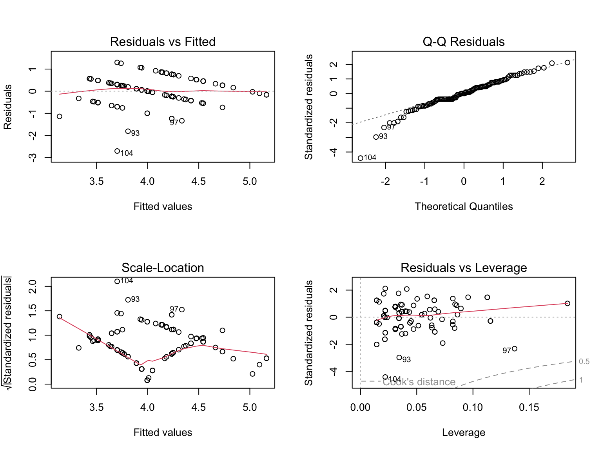

Summary of Data Analysis for H5a-H5d
This analysis examines factors influencing members’ overall attitudes toward the managerial and operational efficiency of Employees Federal Credit Union (EFCU).
The analysis focuses on four hypotheses, H5a through H5d, concerning confidentiality, loan processing promptness, adequacy of financial services, and simplicity of loan applications.
A multiple linear regression analysis is used to determine whether these four factors significantly predict members’ overall evaluations of the credit union.
The primary objective is to identify factors associated with members’ overall attitudes toward the credit union’s operational efficiency.
The four hypotheses examine:
All four hypotheses share the same dependent variable, making multiple regression an appropriate statistical method.
The analysis uses R to import, prepare, and analyze the SPSS survey dataset.
The cleaned SPSS dataset contains survey responses collected from members of Employees Federal Credit Union.
[1] 128 53 [1] "q3" "q4" "q5" "q6" "q7"
[6] "q8" "q9" "q10" "q11" "q12"
[11] "q13" "q14" "q15" "q16" "q17"
[16] "q18" "q19" "q20" "q21" "q22"
[21] "q23" "q24" "q25" "q26" "q27"
[26] "q30" "q31" "q32" "q33" "q34"
[31] "q37" "q38" "Att_employee" "filter_$" "Q7_r"
[36] "Q8_r" "Q37_r" "q9_r" "q10_r" "q13_r"
[41] "q14_r" "q15_r" "q16_r" "q17_r" "q18_r"
[46] "q19_r" "q20_r" "q21_r" "q22_r" "q23_r"
[51] "q24_r" "q25_r" "q26_r" # A tibble: 6 × 53
q3 q4 q5 q6 q7 q8 q9 q10 q11
<dbl+lbl> <dbl+lbl> <dbl+lb> <dbl+l> <dbl+lb> <dbl+lb> <dbl+l> <dbl+l> <dbl+l>
1 4 [Agree] 4 [Agree] 4 [Agre… 4 [Agr… 2 [Hig… 4 [Low] 3 [Abo… 1 [Exc… 1 [Yes]
2 4 [Agree] 4 [Agree] 4 [Agre… 4 [Agr… 3 [Ave… 3 [Ave… 3 [Abo… 2 [Goo… 1 [Yes]
3 4 [Agree] 4 [Agree] 4 [Agre… 4 [Agr… 3 [Ave… NA 3 [Abo… 1 [Exc… 1 [Yes]
4 4 [Agree] 4 [Agree] 3 [Unce… 4 [Agr… NA 3 [Ave… 3 [Abo… 2 [Goo… 1 [Yes]
5 4 [Agree] 4 [Agree] 4 [Agre… 4 [Agr… 2 [Hig… 4 [Low] 3 [Abo… 2 [Goo… 1 [Yes]
6 4 [Agree] 4 [Agree] 4 [Agre… 4 [Agr… 3 [Ave… 3 [Ave… 3 [Abo… 2 [Goo… 1 [Yes]
# ℹ 44 more variables: q12 <dbl+lbl>, q13 <dbl+lbl>, q14 <dbl+lbl>,
# q15 <dbl+lbl>, q16 <dbl+lbl>, q17 <dbl+lbl>, q18 <dbl+lbl>, q19 <dbl+lbl>,
# q20 <dbl+lbl>, q21 <dbl+lbl>, q22 <dbl+lbl>, q23 <dbl+lbl>, q24 <dbl+lbl>,
# q25 <dbl+lbl>, q26 <dbl+lbl>, q27 <dbl+lbl>, q30 <dbl+lbl>, q31 <dbl+lbl>,
# q32 <dbl+lbl>, q33 <dbl+lbl>, q34 <dbl+lbl>, q37 <dbl+lbl>, q38 <dbl+lbl>,
# Att_employee <dbl>, `filter_$` <dbl+lbl>, Q7_r <dbl+lbl>, Q8_r <dbl+lbl>,
# Q37_r <dbl>, q9_r <dbl>, q10_r <dbl>, q13_r <dbl>, q14_r <dbl>, …The dependent variable is the overall managerial and operational efficiency rating.
The independent variables represent four specific aspects of the credit union’s operations.
| Variable | Role | Description |
|---|---|---|
| Q37_r | Dependent | Overall operational efficiency |
| Q31 | Independent | Confidentiality of financial information |
| Q32 | Independent | Loan application processing promptness |
| Q33 | Independent | Adequacy of financial services |
| Q34 | Independent | Simplicity of loan applications |
The dependent variable Q37_r is the recoded version of the overall management and operations rating.
The five variables are selected and converted to numeric values for regression analysis.
Only valid responses are retained. Responses outside the valid five-point scales and missing observations are excluded.
[1] "q3" "q4" "q5" "q6" "q7"
[6] "q8" "q9" "q10" "q11" "q12"
[11] "q13" "q14" "q15" "q16" "q17"
[16] "q18" "q19" "q20" "q21" "q22"
[21] "q23" "q24" "q25" "q26" "q27"
[26] "q30" "q31" "q32" "q33" "q34"
[31] "q37" "q38" "Att_employee" "filter_$" "Q7_r"
[36] "Q8_r" "Q37_r" "q9_r" "q10_r" "q13_r"
[41] "q14_r" "q15_r" "q16_r" "q17_r" "q18_r"
[46] "q19_r" "q20_r" "q21_r" "q22_r" "q23_r"
[51] "q24_r" "q25_r" "q26_r" # Standardize variable names to uppercase
names(efcu) <- toupper(names(efcu))
# Create Q37_R if it does not exist
if (!"Q37_R" %in% names(efcu)) {
if (!"Q37" %in% names(efcu)) {
stop("Neither Q37_R nor Q37 exists in the dataset.")
}
# Reverse Q37 so higher values indicate
# more favorable operational evaluations.
# Original: 1 = Excellent, 5 = Very Poor
# Reversed: 5 = Excellent, 1 = Very Poor
efcu$Q37_R <- ifelse(
as.numeric(efcu$Q37) %in% 1:5,
6 - as.numeric(efcu$Q37),
NA_real_
)
}
# Select required variables
required_vars <- c(
"Q37_R", "Q31", "Q32", "Q33", "Q34"
)
# Identify missing variables
missing_vars <- setdiff(
required_vars,
names(efcu)
)
if (length(missing_vars) > 0) {
stop(
"Missing variables: ",
paste(missing_vars, collapse = ", ")
)
}
# Prepare regression dataset
regression_data <- efcu |>
dplyr::select(dplyr::all_of(required_vars)) |>
dplyr::mutate(
dplyr::across(
dplyr::everything(),
~ as.numeric(.x)
)
) |>
dplyr::mutate(
dplyr::across(
dplyr::everything(),
~ ifelse(.x %in% 1:5, .x, NA_real_)
)
) |>
tidyr::drop_na()
# Rename dependent variable for consistency
names(regression_data)[
names(regression_data) == "Q37_R"
] <- "Q37_r"
# Display results
summary(regression_data) Q37_r Q31 Q32 Q33 Q34
Min. :1.000 Min. :1.000 Min. :2.000 Min. :2.00 Min. :1.000
1st Qu.:4.000 1st Qu.:4.000 1st Qu.:3.000 1st Qu.:3.00 1st Qu.:3.000
Median :4.000 Median :4.000 Median :4.000 Median :4.00 Median :4.000
Mean :4.066 Mean :3.934 Mean :3.736 Mean :3.62 Mean :3.471
3rd Qu.:5.000 3rd Qu.:4.000 3rd Qu.:4.000 3rd Qu.:4.00 3rd Qu.:4.000
Max. :5.000 Max. :5.000 Max. :5.000 Max. :5.00 Max. :5.000 [1] 121The original dataset contains 128 observations.
After excluding missing and invalid responses for the five regression variables, the final analysis includes 121 complete observations.
Using complete cases ensures that the same respondents are included when estimating the effects of all four independent variables.
Hypothesis H5a:
Member belief that the credit union keeps personal financial information confidential will positively influence the overall attitude toward the credit union’s operational efficiency.
Members who believe their personal financial information is protected are expected to evaluate the credit union’s operational efficiency more favorably.
Hypothesis H5b:
Loan application processing promptness will positively influence the overall attitude toward the credit union’s operational efficiency.
Members who believe loan applications are processed promptly are expected to report more favorable attitudes toward the credit union’s operational efficiency.
Hypothesis H5c:
Member satisfaction with the level of financial services in meeting their needs will positively influence the overall attitude toward the credit union’s operational efficiency.
Members who believe the credit union’s services meet their financial needs are expected to evaluate its overall operations more favorably.
Hypothesis H5d:
Loan application simplicity and easiness will positively influence the overall attitude toward the credit union’s operational efficiency.
Members who consider loan applications simple and easy to complete are expected to have more favorable overall attitudes toward the credit union’s operational efficiency.
Multiple linear regression is used because the four hypotheses involve different independent variables but share one dependent variable.
The regression equation is:
\[ Q37_r = \beta_0 + \beta_1Q31 + \beta_2Q32 + \beta_3Q33 + \beta_4Q34 + \epsilon \]
The analysis evaluates the independent contribution of each predictor while controlling for the other three predictors.
The significance level is set at alpha = 0.05.
Call:
lm(formula = Q37_r ~ Q31 + Q32 + Q33 + Q34, data = regression_data)
Residuals:
Min 1Q Median 3Q Max
-2.70193 -0.24939 0.00387 0.38004 1.29807
Coefficients:
Estimate Std. Error t value Pr(>|t|)
(Intercept) 1.34721 0.48011 2.806 0.005884 **
Q31 0.18835 0.08901 2.116 0.036472 *
Q32 0.30787 0.08302 3.709 0.000321 ***
Q33 0.29420 0.08650 3.401 0.000921 ***
Q34 -0.06829 0.07917 -0.863 0.390138
---
Signif. codes: 0 '***' 0.001 '**' 0.01 '*' 0.05 '.' 0.1 ' ' 1
Residual standard error: 0.6186 on 116 degrees of freedom
Multiple R-squared: 0.3006, Adjusted R-squared: 0.2764
F-statistic: 12.46 on 4 and 116 DF, p-value: 1.823e-08 2.5 % 97.5 %
(Intercept) 0.39628458 2.29812931
Q31 0.01206041 0.36463233
Q32 0.14345074 0.47229769
Q33 0.12288199 0.46551079
Q34 -0.22509388 0.08851257The following code extracts the regression coefficients, p-values, model fit statistics, and overall model significance.
model_summary <- summary(model_h5)
coefficients_table <- as.data.frame(
model_summary$coefficients
)
coefficients_table$Variable <- rownames(
coefficients_table
)
rownames(coefficients_table) <- NULL
names(coefficients_table) <- c(
"Estimate",
"Std_Error",
"t_value",
"p_value",
"Variable"
)
r_squared <- model_summary$r.squared
adjusted_r_squared <-
model_summary$adj.r.squared
f_statistic <- unname(
model_summary$fstatistic[1]
)
df1 <- unname(
model_summary$fstatistic[2]
)
df2 <- unname(
model_summary$fstatistic[3]
)
model_p_value <- pf(
f_statistic,
df1,
df2,
lower.tail = FALSE
)
# Display model statistics
data.frame(
R_Squared = r_squared,
Adjusted_R_Squared = adjusted_r_squared,
F_Statistic = f_statistic,
Model_P_Value = model_p_value
) |>
kable(digits = 4)| R_Squared | Adjusted_R_Squared | F_Statistic | Model_P_Value |
|---|---|---|---|
| 0.3006 | 0.2764 | 12.4621 | 0 |
The multiple regression model produced an R-squared value of 0.3006 and an adjusted R-squared value of 0.2764.
The four independent variables collectively explained approximately 30.06% of the variation in members’ overall operational-efficiency ratings.
The overall regression F-statistic was 12.462, with a p-value of 1.82e-08.
The overall regression model was statistically significant at the 0.05 level.
These findings indicate whether the four operational factors collectively provide statistically significant explanatory power for members’ overall evaluations.
| Variable | Estimate | Std_Error | t_value | p_value |
|---|---|---|---|---|
| (Intercept) | 1.3472 | 0.4801 | 2.8060 | 0.0059 |
| Q31 | 0.1883 | 0.0890 | 2.1161 | 0.0365 |
| Q32 | 0.3079 | 0.0830 | 3.7086 | 0.0003 |
| Q33 | 0.2942 | 0.0865 | 3.4013 | 0.0009 |
| Q34 | -0.0683 | 0.0792 | -0.8626 | 0.3901 |
The coefficient estimates indicate the direction and magnitude of each relationship, holding the other predictors constant.
A p-value below 0.05 indicates that a coefficient differs significantly from zero.
Because higher values on the recoded Q37_r represent more favorable evaluations, and the agreement items are coded from strongly disagree to strongly agree, positive coefficients are consistent with the directions proposed in H5a through H5d.
hypothesis_results <- coefficients_table |>
filter(Variable != "(Intercept)") |>
mutate(
Hypothesis = case_when(
Variable == "Q31" ~ "H5a",
Variable == "Q32" ~ "H5b",
Variable == "Q33" ~ "H5c",
Variable == "Q34" ~ "H5d"
),
Decision = ifelse(
p_value < 0.05,
"Reject H0",
"Fail to reject H0"
),
Support = ifelse(
p_value < 0.05 & Estimate > 0,
"Supported",
"Not supported"
)
) |>
arrange(Hypothesis)
hypothesis_results |>
select(
Hypothesis,
Variable,
Estimate,
p_value,
Decision,
Support
) |>
kable(
digits = 4,
caption = "Hypothesis Testing Results"
)| Hypothesis | Variable | Estimate | p_value | Decision | Support |
|---|---|---|---|---|---|
| H5a | Q31 | 0.1883 | 0.0365 | Reject H0 | Supported |
| H5b | Q32 | 0.3079 | 0.0003 | Reject H0 | Supported |
| H5c | Q33 | 0.2942 | 0.0009 | Reject H0 | Supported |
| H5d | Q34 | -0.0683 | 0.3901 | Fail to reject H0 | Not supported |
The regression coefficient for confidentiality of personal financial information (Q31) was 0.1883.
The p-value was 0.0365.
The relationship was statistically significant at the 0.05 level.
Hypothesis Decision:
H5a was Supported.
The results indicate that confidentiality of personal financial information has a statistically significant positive relationship with members’ overall attitudes toward operational efficiency, after controlling for the other predictors.
The regression coefficient for loan application processing promptness (Q32) was 0.3079.
The p-value was 0.000321.
The relationship was statistically significant at the 0.05 level.
Hypothesis Decision:
H5b was Supported.
The results indicate that loan processing promptness has a statistically significant positive relationship with members’ overall attitudes toward operational efficiency, after controlling for the other predictors.
The regression coefficient for adequacy of financial services (Q33) was 0.2942.
The p-value was 0.000921.
The relationship was statistically significant at the 0.05 level.
Hypothesis Decision:
H5c was Supported.
The results indicate that adequacy of financial services has a statistically significant positive relationship with members’ overall attitudes toward operational efficiency, after controlling for the other predictors.
The regression coefficient for simplicity and ease of loan applications (Q34) was -0.0683.
The p-value was 0.39.
The relationship was not statistically significant at the 0.05 level.
Hypothesis Decision:
H5d was Not supported.
The results indicate that simplicity of loan applications does not demonstrate a statistically significant positive relationship with members’ overall attitudes toward operational efficiency, after controlling for the other predictors.
Regression diagnostics are performed to evaluate the suitability of the multiple regression model.
The analysis examines:

Variance inflation factors (VIF) are calculated to evaluate multicollinearity among the four independent variables.
Higher VIF values indicate stronger linear relationships among predictors, which can make coefficient estimates less precise.
predictor_names <- c(
"Q31", "Q32", "Q33", "Q34"
)
vif_values <- sapply(
predictor_names,
function(variable) {
other_variables <- setdiff(
predictor_names,
variable
)
auxiliary_model <- lm(
reformulate(
other_variables,
response = variable
),
data = regression_data
)
1 / (1 - summary(auxiliary_model)$r.squared)
}
)
data.frame(
Predictor = names(vif_values),
VIF = as.numeric(vif_values)
) |>
kable(
digits = 3,
caption = "Variance Inflation Factors"
)| Predictor | VIF |
|---|---|
| Q31 | 1.148 |
| Q32 | 1.396 |
| Q33 | 1.066 |
| Q34 | 1.214 |
The regression diagnostic plots provide information about the residual distribution, variance consistency, and potentially influential observations.
The highest calculated variance inflation factor was 1.396.
The VIF results do not indicate substantial multicollinearity using a threshold of 5.
The residual plots should also be reviewed visually before drawing final conclusions about the model assumptions.
| Hypothesis | Variable | Estimate | p_value | Support |
|---|---|---|---|---|
| H5a | Q31 | 0.1883 | 0.0365 | Supported |
| H5b | Q32 | 0.3079 | 0.0003 | Supported |
| H5c | Q33 | 0.2942 | 0.0009 | Supported |
| H5d | Q34 | -0.0683 | 0.3901 | Not supported |
The multiple regression analysis examined four potential predictors of members’ overall attitudes toward the operational efficiency of Employees Federal Credit Union.
Of the four hypotheses, 3 received statistical support.
The model explained 30.06% of the variance in overall operational-efficiency ratings.
The findings help identify which aspects of the credit union’s services are positively associated with members’ overall evaluations when the other operational factors are held constant.
The regression findings can assist management in identifying operational areas associated with member satisfaction.
Confidentiality, loan processing promptness, adequacy of financial services, and simplicity of loan applications represent important aspects of the member experience.
Management should pay particular attention to factors showing statistically significant positive relationships with overall operational efficiency.
These findings can guide service evaluations and help prioritize operational improvements.
Employees Federal Credit Union should use the regression findings to evaluate its operational practices.
Recommended actions include:
The regression results identify associations and should not be interpreted as proof that changing a particular factor will cause an improvement in overall ratings.
This analysis tested H5a through H5d using one multiple linear regression model.
The dependent variable was overall managerial and operational efficiency (Q37_r).
The independent variables were confidentiality (Q31), loan processing promptness (Q32), adequacy of financial services (Q33), and loan application simplicity (Q34).
The overall regression model was statistically significant.
The analysis found that 3 out of four hypotheses were supported.
These findings provide evidence about the relationships between members’ perceptions of specific operational practices and their overall evaluation of Employees Federal Credit Union.
The following materials were used:
The statistical analysis was conducted in R using the following packages:
The primary statistical procedure was multiple linear regression using the lm() function.
Statistical significance was evaluated at the 0.05 level.
The Quarto source code and rendered HTML report are intended for publication through GitHub.
The GitHub repository and published report links are listed below.
The required submission includes:
IC11-6-Case-31.qmdIC11-6-Case-31.htmlThe HTML report is generated by rendering the Quarto source file.
The H5a-H5d analysis uses one multiple regression model to evaluate four operational factors associated with members’ overall attitudes toward Employees Federal Credit Union.
The analysis includes data preparation, regression estimation, statistical significance testing, hypothesis decisions, regression diagnostics, and managerial implications.
The findings provide a quantitative basis for understanding the operational factors associated with members’ overall evaluations of the credit union.